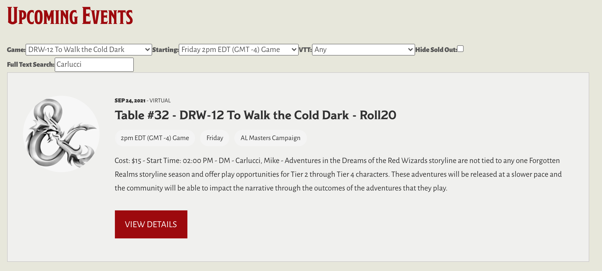

To install, drag this link Yawning Portal Search to your browser toolbar
If you have set up your browser not to show the bookmarks toolbar, you can open up your bookmark manager and paste the bookmarket code, but its simpler to show the toolbar, drag it in, and then hide it again if you really do not like seeing it.
To use:
And see the search form above the list of events:
Happy Searching